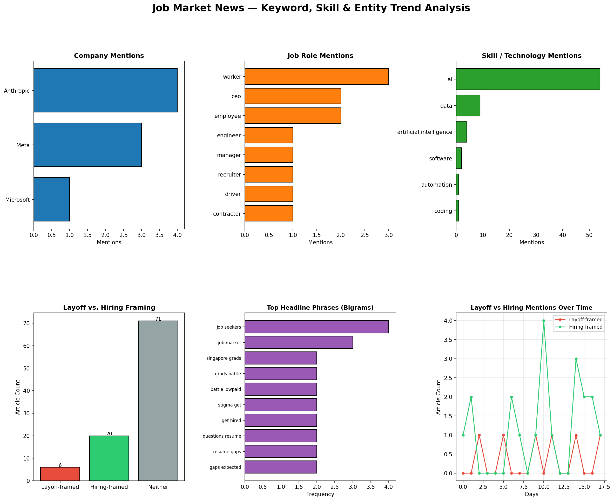

Without API Data Analysis
Overview
This analysis runs entirely on data already collected in this repository (job_market_news.csv) using local, offline tools only — no external API calls, no keys required. It covers three angles not addressed elsewhere in this site: named-entity/keyword mining, hiring vs. layoff framing, and headline phrase (bigram) patterns.
Tools used: pandas, matplotlib, regex-based keyword matching — all local.
Dashboard

The dashboard above covers:
- Company mentions — which companies appear most often in headlines/descriptions
- Job role mentions — which roles are discussed most
- Skill/technology mentions — which skills come up in coverage
- Layoff vs. hiring framing — how many articles lean toward job cuts vs. job growth
- Top headline bigrams — the most common two-word phrases in headlines
- Layoff/hiring mentions over time — trend of framing across the collection period
Key Findings
- 97 articles analyzed from the collected dataset
- 20 articles framed around hiring/growth vs. 6 articles framed around layoffs — coverage skews toward hiring news in this sample
- Most-mentioned companies: Anthropic (4), Meta (3), Microsoft (1)
- Most-mentioned roles: worker (3), CEO (2), employee (2)
Top Companies Mentioned
| Company | Mentions |
|---|---|
| Anthropic | 4 |
| Meta | 3 |
| Microsoft | 1 |
Top Roles Mentioned
| Role | Mentions |
|---|---|
| Worker | 3 |
| CEO | 2 |
| Employee | 2 |
| Engineer | 1 |
| Manager | 1 |
| Recruiter | 1 |
| Driver | 1 |
| Contractor | 1 |
Top Headline Phrases (Bigrams)
| Phrase | Frequency |
|---|---|
| job seekers | 4 |
| job market | 3 |
| singapore grads | 2 |
| grads battle | 2 |
| battle lowpaid | 2 |
| stigma get | 2 |
| get hired | 2 |
| questions resume | 2 |
| resume gaps | 2 |
| gaps expected | 2 |
Data Files
Full Article-Level Data (All 97 Articles)
Every article in the dataset, with its layoff/hiring classification:
| Source | Title | Layoff | Hiring | Date |
|---|---|---|---|---|
| Arcamax.com | Older tech workers are tapping out early. Here’s what that looks like | 2026-06-26 | ||
| New York Post | Popular supermarket guarantees a job interview to anyone who has been out of work for 6 months or more | 2026-06-26 | ||
| Freerepublic.com | $7.25 To $25? Senate Democrat’s New Federal Minimum Wage Proposal | 2026-06-26 | ||
| The Next Web | California built a tool to catch AI killing jobs | 🔴 Yes | 2026-06-26 | |
| The New Republic | Transcript: How Colleges Can Defend Themselves From MAGA | 2026-06-26 | ||
| Fortune | Singapore grads battle low-paid trainee stigma to get hired | 🟢 Yes | 2026-06-26 | |
| Fortune | Everyone agrees that you hate AI, but only Mark Cuban sees why Silicon Valley is powerless to fix it | 2026-06-26 | ||
| Abcnews.com | Questions about resume gaps are expected. Here’s how job seekers can address them | 2026-06-26 | ||
| Financial Post | Singapore Grads Battle Low-Paid Traineeships Stigma to Get Hired | 🟢 Yes | 2026-06-25 | |
| Yahoo Entertainment | Questions about resume gaps are expected. Here’s how job seekers can address them | 2026-06-25 | ||
| Decrypt | AI Took Your Job? California Wants to Know | 2026-06-25 | ||
| CryptoSlate | Bitcoin’s bear market struggle is killing crypto jobs but fueling a $10 billion Wall Street-backed M&A boom | 2026-06-25 | ||
| BusinessLine | AI is redrawing the entry gate | 2026-06-25 | ||
| The Times of India | High salary in startup or stable MNC job? What is the right choice? Employee gets a reality check six months after job switch | 2026-06-25 | ||
| BusinessLine | Sensex today - Stock Market Highlights: Sensex crosses 77,100 as Nifty ends above 24,000 in cautious trade | 2026-06-25 | ||
| Crypto Briefing | RAISE US launches $500M AI jobs initiative with bipartisan support | 2026-06-25 | ||
| Fortune | Gen Z graduates are blaming AI for their unemployment woes when they should be looking somewhere else | 2026-06-25 | ||
| Motorsport.com | Spire and Chris Gabehart countersue Joe Gibbs Racing | 2026-06-25 | ||
| Search Engine Journal | Marketing Hiring Down 36% At Big Tech, Data Shows via @sejournal, @MattGSouthern | 🟢 Yes | 2026-06-25 | |
| Freerepublic.com | Is AI Really Taking All the Jobs? Anthropic Co-Founder Reveals the Data. | 2026-06-24 | ||
| New York Post | California’s missing workers: 200K vanish from labor force as job growth flatlines | 🟢 Yes | 2026-06-24 | |
| The Conversation Africa | Are algorithms unfairly screening out immigrant job applications? | 🟢 Yes | 2026-06-24 | |
| Crypto Briefing | Santander plans up to 3,000 early retirements in Spain amid AI shift | 2026-06-24 | ||
| Insurance Journal | Florida’s Unemployment Rate Is Surging Even as High-Profile Companies Move In | 2026-06-24 | ||
| TheStreet | BofA flips the script with bombshell Fed interest-rate outlook | 2026-06-24 | ||
| Yahoo Entertainment | Young job seekers might want to swap New York City for the South | 2026-06-24 | ||
| Reason | Anthropic Co-Founder: ‘The Most Powerful Technology Ever Built’ | 2026-06-23 | ||
| Bostoninstituteofanalytics.org | Best Digital Marketing Course In Mumbai: 2026 Job Trends | 🟢 Yes | 2026-06-23 | |
| Mediaite | Shock Report Shows Factory Layoffs At Financial Crisis, Pandemic Levels | 🔴 Yes | 2026-06-23 | |
| TheStreet | Goldman hints at Fed’s next interest-rate bet under Warsh | 2026-06-23 | ||
| Bradenkelley.com | The AI Apprenticeship Economy | 2026-06-23 | ||
| GlobeNewswire | Agentic AI in HCM Market to Nearly Triple by 2031 as Labor Scarcity Forces Enterprises Toward Autonomous HR Workflows | 🟢 Yes | 2026-06-23 | |
| Naftemporiki.gr | AI and skills development emerge as key productivity drivers for Greek businesses | 2026-06-23 | ||
| New Zealand Herald | NZ shares trade flat amid global uncertainty, domestic hiring hesitancy – Market close | 🟢 Yes | 2026-06-23 | |
| The Irish Times | Wins, losses and U-turns: Keir Starmer’s successes and failures in No 10 | 2026-06-22 | ||
| Archinect | Four unique projects by Touloukian Touloukian: Your Next Employer? | 2026-06-22 | ||
| MarketWatch | ‘I became invisible when I turned 60’: The hidden crisis of late-career unemployment | 2026-06-22 | ||
| Starcio.com | 5 Essential Questions for CIOs on Planning IT Careers in the AI Era | 2026-06-22 | ||
| Nesbitt.io | Open Source vs the Invisible Hand - Andrew Nesbitt | 2026-06-21 | ||
| The Times of India | Rs 6 crore enough to live jobless in India? Man facing office layoff asks internet what is the cost for survival in ‘worst-case scenario’ | 🔴 Yes | 2026-06-20 | |
| Placementist.com | “Career coaches” are fear-farming the Stanford AI hiring study [debunk] | 🟢 Yes | 2026-06-20 | |
| New Zealand Herald | NZ’s economy is beginning to turn around while Australia is showing signs of fatigue - Slade Robertson | 2026-06-20 | ||
| Medianewsgroup.com | San Diego added 4,300 jobs in May. Here’s who’s hiring | 🟢 Yes | 2026-06-19 | |
| Business Insider | One chart shows AI’s jobs impact — and how it compares to other tech advances | 2026-06-19 | ||
| CNBC | Struggling to find a job? Try looking in Nevada | 🟢 Yes | 2026-06-19 | |
| The Times of India | World’s first trillionaire Elon Musk reveals SpaceX’s biggest hiring challenge was convincing married engineers to relocate to Starbase near the Mexican border | 🟢 Yes | 2026-06-19 | |
| GlobeNewswire | 54% of Aspiring Web3 Professionals Can’t Land Their First Job: Bitget Report | 🟢 Yes | 2026-06-19 | |
| Retail-insight-network.com | UK retail employment falls to record low as labour costs rise | 2026-06-19 | ||
| The Atlantic | The Job Market Is Thawing | 🟢 Yes | 2026-06-18 | |
| Yahoo Entertainment | Exclusive: Arizona senator warns ‘ghost jobs’ are warping labor data, presses Trump admin to investigate | 2026-06-18 | ||
| Fortune | Exclusive: Arizona senator warns ‘ghost jobs’ are warping labor data, presses Trump admin to investigate | 2026-06-18 | ||
| The Times of India | US weekly jobless claims fall amid low layoffs | 🔴 Yes | 2026-06-18 | |
| Techtarget.com | HR must have a say in AI policy to forestall legal risks | 2026-06-18 | ||
| Financial Post | Posthaste: Canada’s in a ‘demographic recession.’ Should we be worried? | 2026-06-18 | ||
| Pstechglobal.com | Digital Marketing Course 2026: Blueprint to Land a Job | 2026-06-18 | ||
| DW (English) | Germany news: Industrial employment falls to decade low | 2026-06-18 | ||
| BBC News | Number of job vacancies hits five year-low | 2026-06-18 | ||
| Ncspin.com | How good is the job market? | 2026-06-17 | ||
| Investopedia | Fed Keeps Interest Rates Steady as Warsh Announces Plans to Overhaul Operations | 2026-06-17 | ||
| Crypto Briefing | US ADP weekly employment change shows 25,500 job increase, missing forecasts | 🟢 Yes | 2026-06-16 | |
| The Times of India | Kevin Warsh takes Fed pulpit with immediate challenges, longer-term agenda | 2026-06-16 | ||
| Scientific American | U.S. scientists are being lured abroad—and they aren’t looking back | 2026-06-16 | ||
| Scientific American | Ted Budd | 2026-06-16 | ||
| GlobeNewswire | PsyMetrics Milestone Reinforces Position as a Leading White Label Assessment Platform for HR Consultants | 2026-06-15 | ||
| Www.gov.uk | LinkedIn and government join forces to help jobseekers build their careers | 2026-06-15 | ||
| BusinessLine | Upskilled slum dwellers power India’s retail, healthcare and gig economy | 2026-06-15 | ||
| Livemint | Natural intelligence on the ropes: Why India’s middle managers are becoming obsolete | 2026-06-15 | ||
| BusinessLine | Global hiring has normalised, but India remains a bright spot: Michael Page CEO | 🟢 Yes | 2026-06-15 | |
| PRNewswire | ManpowerGroup Returns to VivaTech to Power the Shift from AI Ambition to Workforce Reality | 2026-06-15 | ||
| Theregister.com | UK AI hiring surges as firms seek people to babysit the bots | 🟢 Yes | 2026-06-15 | |
| CNA | Warsh’s debut Fed press conference may reveal his strategy for inflation, rates | 2026-06-15 | ||
| Business Insider | He finally felt financially stable — until he was laid off. Then came a frustrating job search and restaurant work in NYC. | 2026-06-15 | ||
| USA Today | Kevin Warsh’s first Fed meeting could bring unwelcome news for Trump | 2026-06-15 | ||
| Business Insider | The economy keeps adding jobs. Many job seekers still feel stuck. | 🔴 Yes | 2026-06-14 | |
| The Times of India | Laid off from her dream tech job, woman says it was the best thing that happened to her. ‘My hair stopped falling out’ | 2026-06-12 | ||
| Dazed | ‘We’ve been left to rot’: Inside Britain’s new ‘Bedroom Generation’ | 2026-06-12 | ||
| CBC News | Summer work in short supply for students amid weakened job market | 2026-06-12 | ||
| Normaltech.ai | Why AI hasn’t replaced software engineers, and won’t | 2026-06-11 | ||
| Raw Story | Republicans move to gut child labor protections | 2026-06-10 | ||
| The Daily Caller | Half Of Americans Now Afraid They’ll Lose Their Jobs To AI | 2026-06-10 | ||
| Nakedcapitalism.com | Increasing Employment in Pre-Retirement Years Slows Cognitive Decline | 2026-06-10 | ||
| The Conversation Africa | South Africa’s jobs crisis: what 10 years of tax data tells us | 2026-06-10 | ||
| The New Republic | Don’t Blame Old People For American Decline | 2026-06-10 | ||
| The Root | Expert to Black America: You Can ‘Future-Proof’ Your Job As AI Threatens the Market | 2026-06-10 | ||
| Yahoo Entertainment | Analysis-China Inc deploys ‘quiet’ layoffs as Beijing promotes AI adoption | 🔴 Yes | 2026-06-10 | |
| Crypto Briefing | Meta launches $115M America’s Workforce Academy to train future technicians with guaranteed jobs | 2026-06-09 | ||
| TheStreet | Inflation drives rate-cut debate at Warsh’s first Fed meeting | 2026-06-09 | ||
| New Zealand Herald | Bay of Plenty records highest unemployment rate in New Zealand, national average dips | 2026-06-09 | ||
| PRNewswire | Global Hiring Outlook Holds Steady in Q3 With Mid-Size Employers Showing Most Optimism | 🟢 Yes | 2026-06-09 | |
| The Times of India | Flexi-staffing industry in India sees 8% YoY growth in new employment in 2025-26: ISF report | 2026-06-09 | ||
| Fortune | The man behind Claude Code says you’re comparing AI costs to the wrong thing | 2026-06-09 | ||
| Christiantoday.com | A Christian response to the crisis facing young people | 2026-06-09 | ||
| BusinessLine | Indian employers turn cautious over hiring in July-Sep amid global uncertainties: Report | 🟢 Yes | 2026-06-09 | |
| The Irish Times | What sort of workforce are graduates entering, and what do they need to know? | 2026-06-09 | ||
| Dailymail.com | Half of graduates earn LESS than the median national wage 5 years after leaving university | 2026-06-08 | ||
| pymnts.com | Conference Board Says Easier Hiring Signals Upcoming Labor Market Weakness | 🟢 Yes | 2026-06-08 | |
| Crypto Briefing | Trump says Fed rate increase would be wrong after jobs report | 2026-06-08 |
Interpretation
The bigram list surfaces a recurring narrative thread around entry-level job seekers facing resume gap stigma (“job seekers,” “resume gaps,” “stigma get hired”) alongside a regional story about Singapore graduates in a low-paid job market. Combined with the hiring/layoff split, the sample suggests current coverage is leaning toward structural hiring friction (resume gaps, stigma) rather than mass layoff events — though the small sample size (97 articles, only 6 layoff-flagged) means this should be read as directional, not definitive.